荒崎海岸
| 日付 | 2016年7月30日（土） |
|---|---|
| メンバー | 家族（妻、長女・5歳、長男・3歳、妻の妹一家） |
| アクセス | 車 |
今年2回目の荒崎海岸に行く。前回は5月で寒かったが、本日は海で泳ぐ予定だ。
先々週一度行こうとしたが、出発が遅くなり駐車場に入れないとの情報を入手してキャンセル。
本日は8時に到着できるよう、早起きして出発する。
横須賀に住む妻の妹一家に連絡して現地合流する。
本日は快晴。ここまできれいに晴れるのは初めてだ。
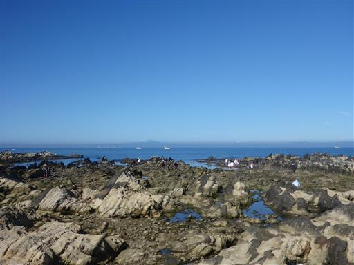
テントなどの準備をしている間、息子は拾った棒で釣りの真似事をしている。
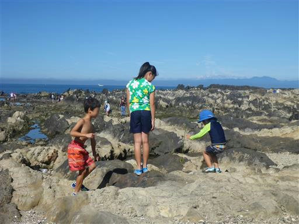
娘は早速網を持って生物を探している。
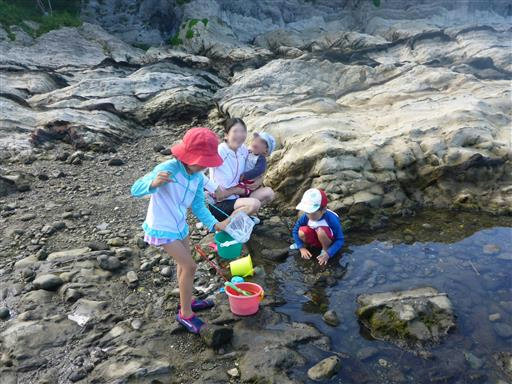
いつものように、カニ、ヤドカリ、ハゼなどを捕まえる。
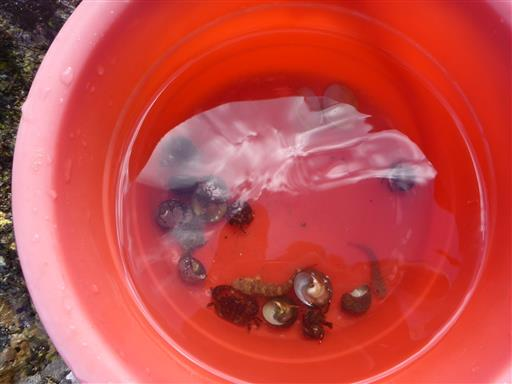
日が上がって暖かくなってきたので、浮き輪を付けて泳ぎに海に出る。
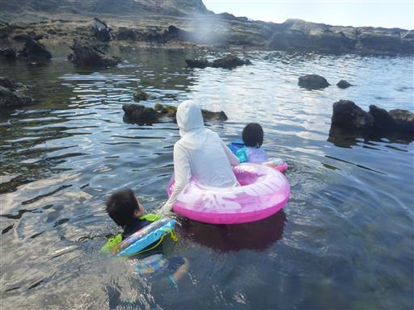
今日は海の向こう側に富士山がよく見えている。
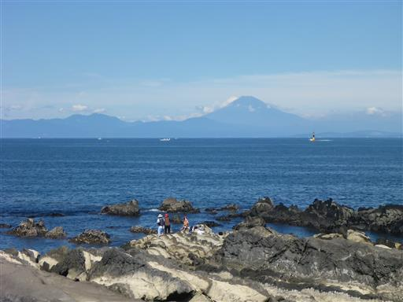
しばらく泳いだら、岩だらけ地帯に少し遊びに行く。
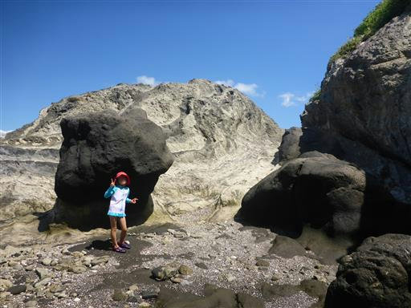
この辺りは岩が大きなギザギザの形になっている。
岩を登ったり海に降りたりして先に進んでいく。不思議な地形だ。
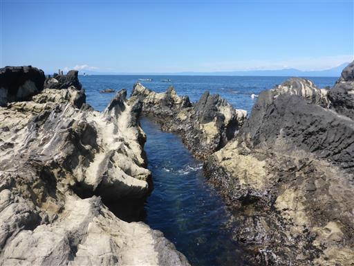
所々にタイドプールがある。
このような場所は取り残された生物を捕まえやすい。
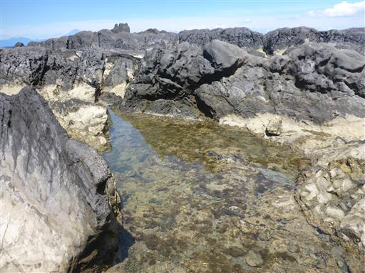
小さなタイドプールに、見たことのない生物が大量発生している。
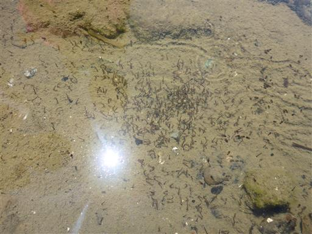
再びシュノーケリング開始。水中写真を撮ってみるが、上手く撮れない。
スマホ用の防水ケースにカメラを入れて撮ってみたがのだが、案外水中写真は難しい。
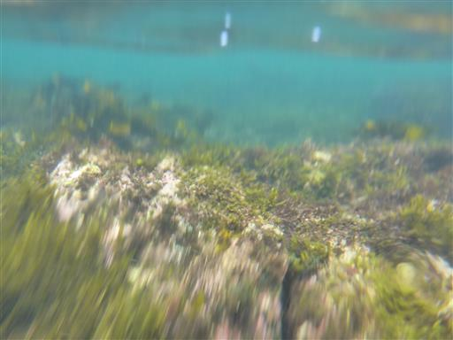
水面からだときれいに撮れる。水中は光の量が足りないのだろうか？
少し沖に出ると水がきれいだ。30cm程の大きな魚も見られる。
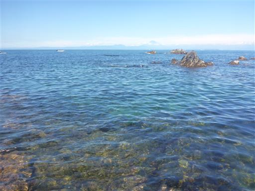
体が冷えたので体を温めるため、少し散歩して夕日の丘に登ってみる。
荒崎海岸には何度も来ているが、ここに登るのは初めてだ。
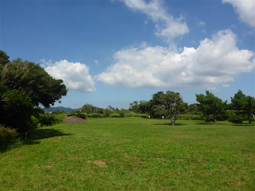
荒崎海岸を見下ろす。
多くの人が生物を捕まえたり、シュノーケリングをしたりして遊んでいる。
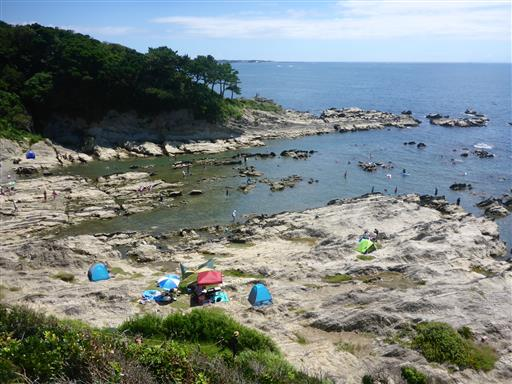
こちらは岩地帯。人が少ないが、シュノーケリングをしている人や
釣りをしている人が見える。最後にもう一度海で泳いで撤収する。
子供達はだいぶ怖がらずに海に入れるようになり、充実した海遊びができた。
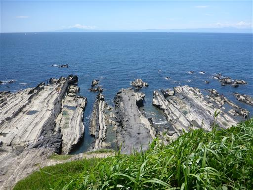
他の記録